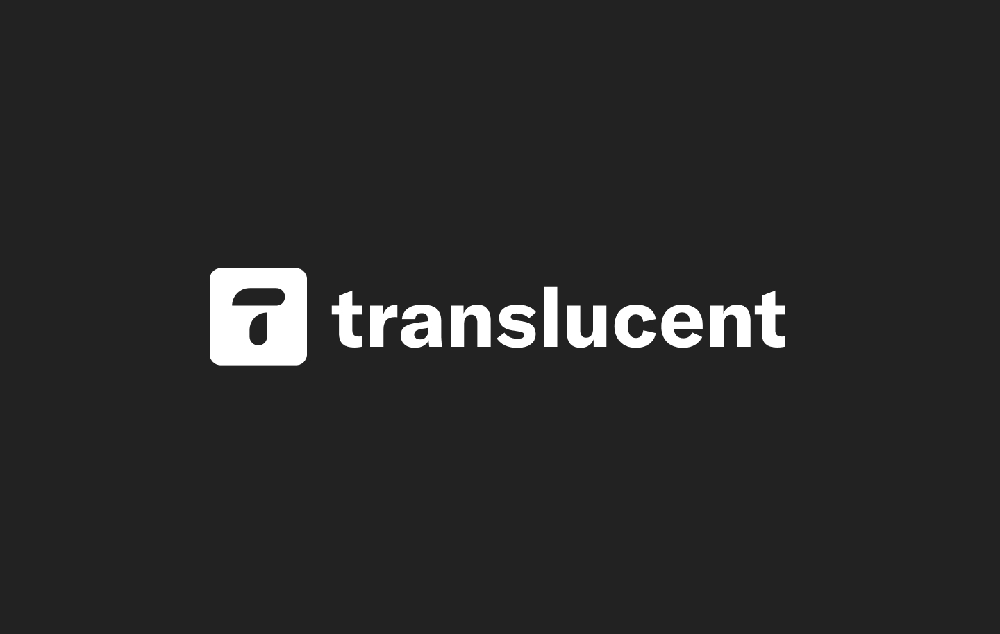
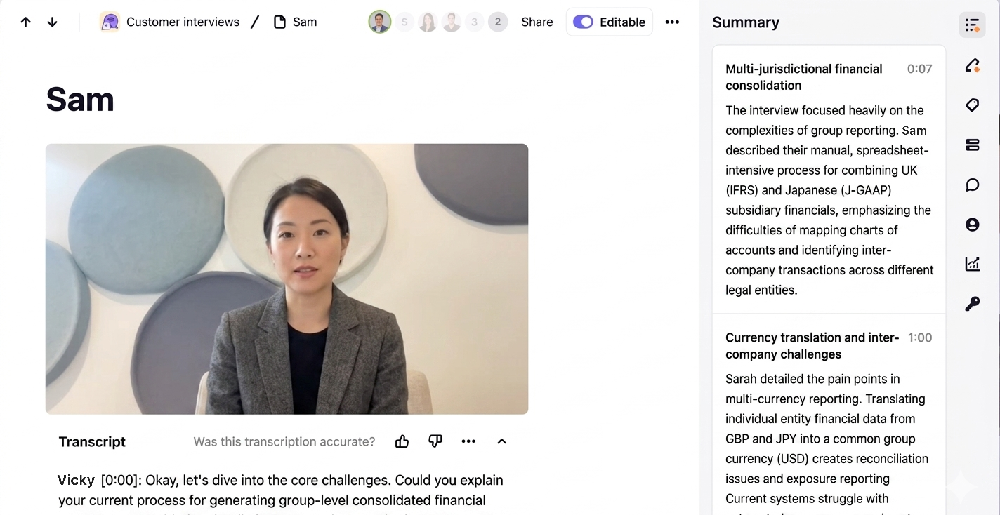
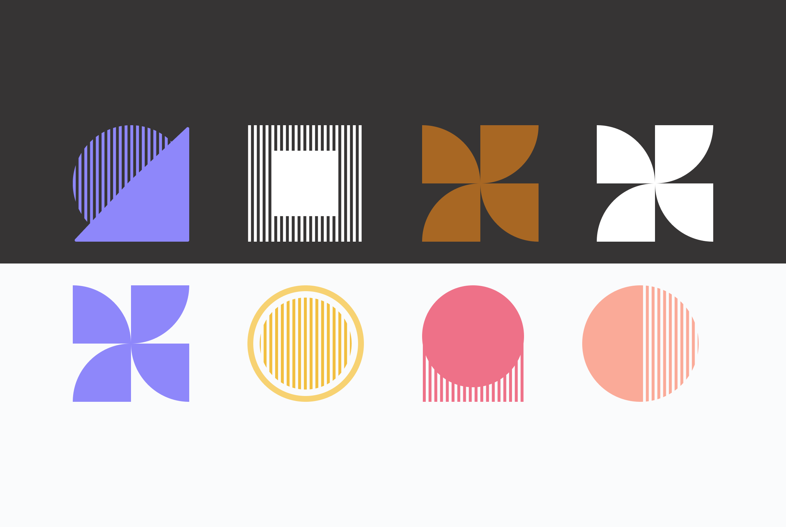
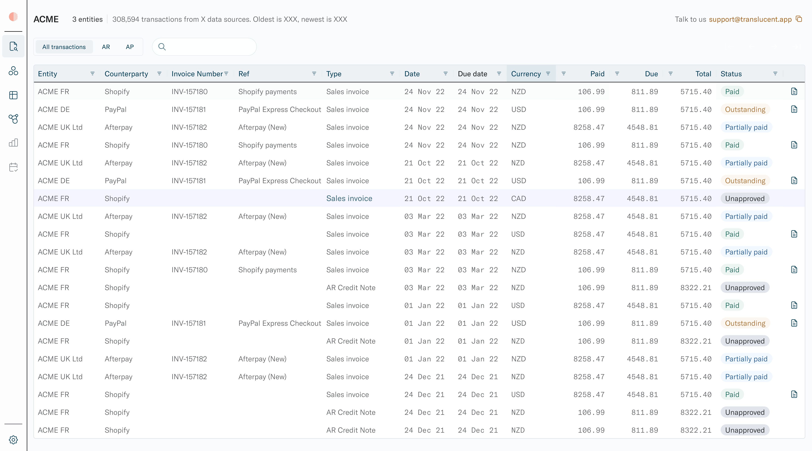
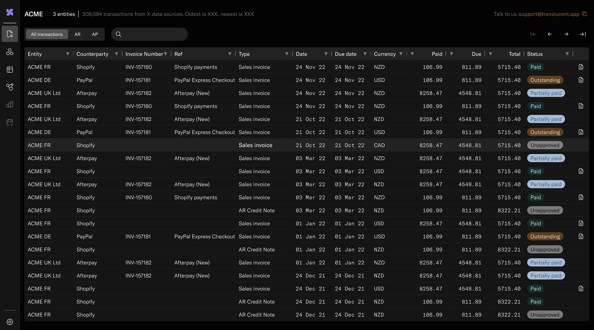
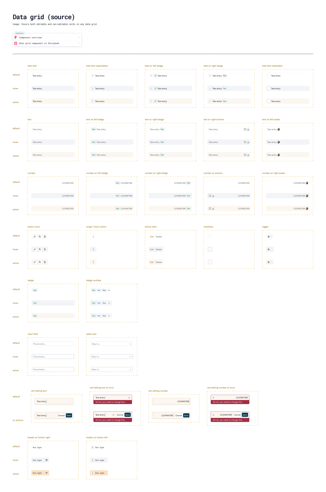

Zero to one: designing and shipping a fintech suite from scratch.

Translucent was building intercompany accounting software — a category with no
established UX playbook. Finance teams were managing complex multi-entity, multi-currency transactions
across disparate systems, reconciling them by hand in spreadsheets. I joined as founding designer and over
15 months built the brand, the product, and the design system that underpinned it all. The scope was total.
15 moAs founding designer
4Apps built
50+User interviews
Research in uncharted territory.
Since there were no reference products I went straight to the source: running 1:1 sessions directly with
the
finance professionals who
would use the product — accountants who understood the complexities of multi-entity accounting in a way that
I didn't. What did their actual workflow look like, where were the failure points?

A customer interview session, with AI-generated summary. The research surfaced multiple pain
points and unaddressed needs and workflows that I could prioritise and design around.
What emerged was a clear pattern: existing tools imposed a structure that didn't fit how
multi-entity accounting actually worked. Users had adapted around them, building fragile workarounds
to compensate. The design challenge wasn't to improve those workflows — it was to start from scratch
and design around them.
Brand and product, built in parallel.
With a tight delivery schedule and an engineering team ready to build, brand and product work ran
simultaneously. The brand had to feel credible to finance professionals — structured, considered, not flashy
— while signalling that this was a new kind of tool in a category that had historically been grim to use.

The brand visual language — a combinatorial system of geometric shapes serving as entity
identifiers across the product. Each connected accounting source gets a distinct but coherent identity.
Clean, systematic, scalable.
The product itself required designing for high-density structured data — entities, accounts,
currencies,
exchange rates, debit/credit columns — without losing legibility.

The multi-entity search view — pulling transactions from four source systems into a single
coherent interface.The "Create a run" journal flow — 40 journals, 20 entities, multiple currencies, a single post
action. Designing this required understanding double-entry accounting well enough to know what information
users needed to verify before committing.
A system built to move fast.
Speed was non-negotiable. I was a strong advocate for tokens and worked closely with the engineering team
to establish a tokenised design system — colour,
spacing, typography, and component states defined once and referenced everywhere. This way, the system
could adapt and extend as the product grew and branding evolved rather than needing to be defined at the
outset.

Dark mode made possible quickly and easily thanks to the shared token system.
The data grid was one component that evolved significantly as the product grew, and as more
use cases arose. Keeping the design and code aligned, via close collaboration with the engineering
team, was key to shipping fast and avoiding design debt building.

Component documentation for the data grid — the most complex component in the suite, appearing
in almost every screen. Every variant, state, and edge case specced. Built once, reused
everywhere.
Fifteen months. Brand, research, product, and system — built from nothing, shipped and in use. The work
was demanding and novel: no tech, no product, no design templates to follow, no incumbents to learn from.
Just a domain crying out for better user experience.